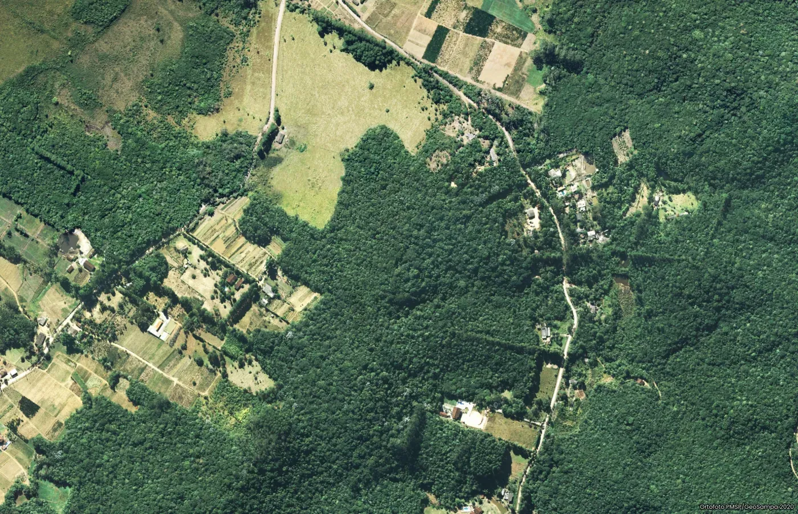
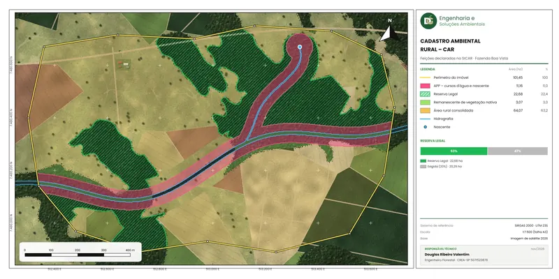
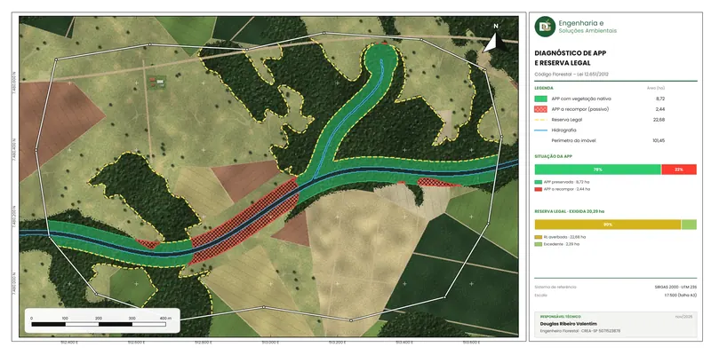

Agro e imóveis rurais
Regularização ambiental e documentação técnica do imóvel rural: ITR, CAR, crédito rural, APP e Reserva Legal, monitoramento de desmatamento e topografia, com entregas aceitas por banco, cartório e SICAR.
O que entregamos

Levantamento planialtimétrico e memorial descritivo
Topografia para projetos, loteamentos e cartório.
Saiba mais
Inventário florestal e supressão de vegetação
Laudo de vegetação e pedido de supressão.
Saiba mais
Aerofotogrametria e mapeamento aéreo
Ortomosaico, MDS/MDT e curvas de nível.
Saiba mais
Monitoramento de PRAD e restauração
Relatórios de recuperação de áreas degradadas.
Saiba mais
Laudo de uso do solo para ITR
Mapa e quadro de áreas para a declaração do ITR.
Saiba mais
CAR – Cadastro Ambiental Rural
Inscrição, retificação e regularização no SICAR.
Saiba mais
Georreferenciamento para crédito rural
Polígonos das glebas no padrão SICOR/BACEN.
Saiba mais
Laudo de APP e Reserva Legal
Delimitação, passivo e regularização – rural e urbano.
Saiba mais
Monitoramento de desmatamento
Origem livre de desmatamento comprovada.
Saiba mais
Perícia e assistência técnica
Pareceres e análise histórica por satélite.
Saiba maisProdutos entregues
 Mapa de uso e ocupação do solo
Mapa do CAR
Mapa de uso e ocupação do solo
Mapa do CAR
 Mapa de glebas georreferenciadas para crédito rural
Diagnóstico de APP e Reserva Legal
Mapa de glebas georreferenciadas para crédito rural
Diagnóstico de APP e Reserva Legal
 Série histórica de ortofotos (2004, 2017 e 2020)
Série histórica de ortofotos (2004, 2017 e 2020)
 Alerta de alteração de cobertura vegetal detectada em ortofoto aérea
Alerta de alteração de cobertura vegetal detectada em ortofoto aérea
Veja também

Construção e loteamentos
Topografia, licenciamento e acompanhamento de obras para construtoras, loteadoras e prefeituras.
- Levantamento planialtimétrico
- Topografia para obras
- Inspeção aérea de obras
- Inventário florestal

Indústria e empresas
Volumetria, licenciamento, PRAD e monitoramento para indústrias e mineração.
- Volumetria de pilhas
- Licenciamento
- Monitoramento de PRAD
- Inventário florestal